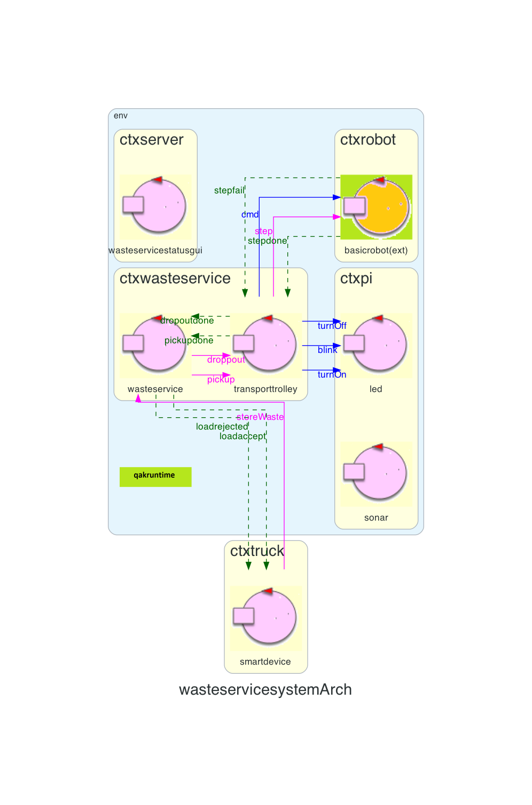
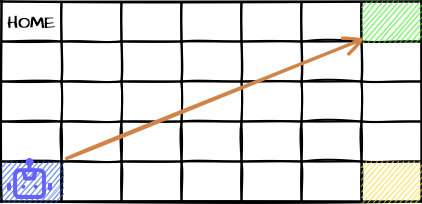
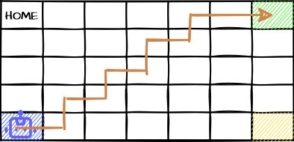
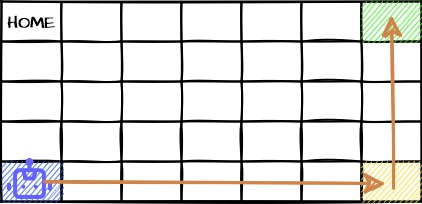
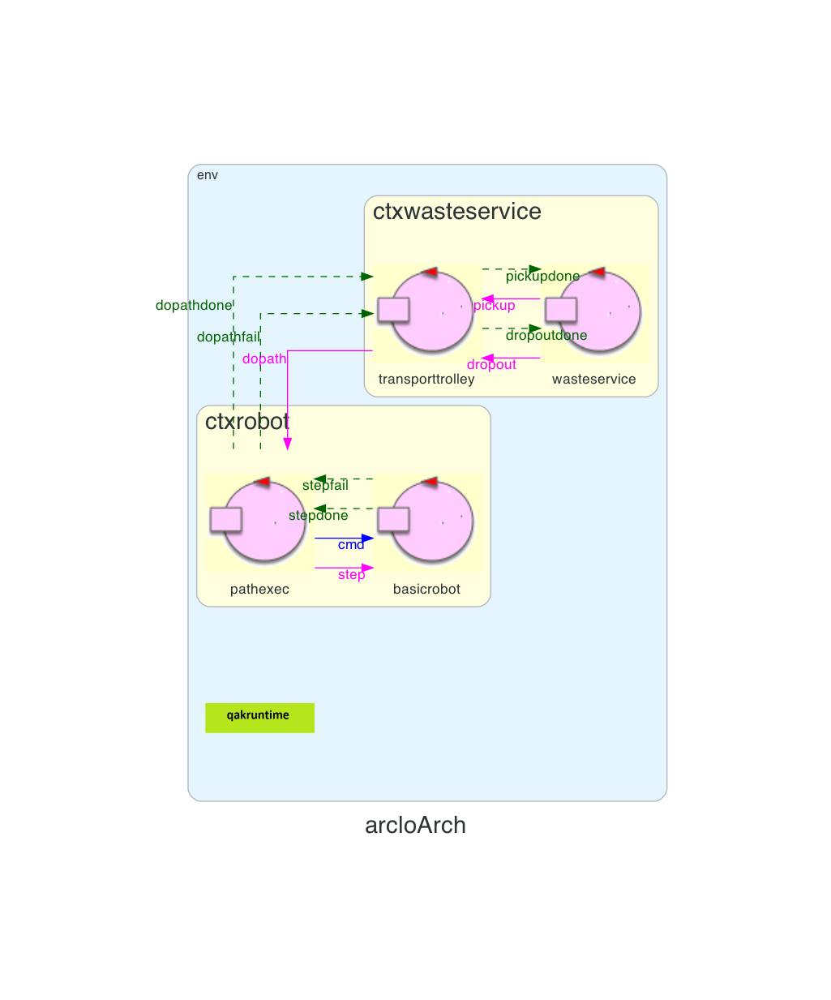
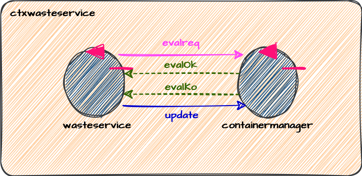
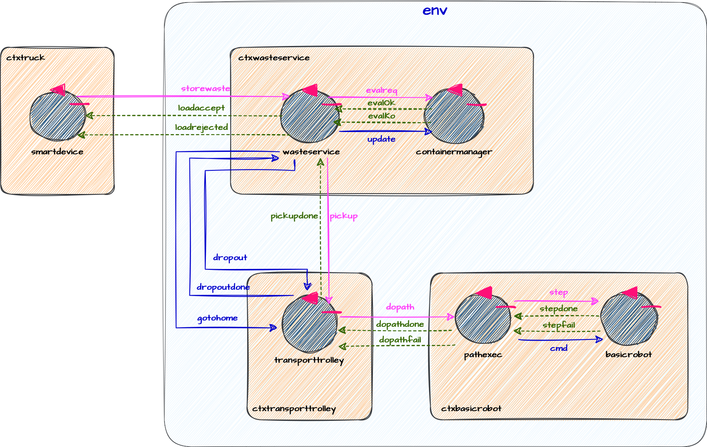

Introduction
Requirements
Work Plan
In questo Sprint ci concentreremo sul Core Business del sistema, analizzeremo le principali problematiche
relative al core business, proponendo soluzioni e individuando le migliori tra di esse.
Svilupperemo inoltre un prototipo funzionante del sottoproblema analizzato e dei test automatizzati per verificarne il corretto funzionamento.
In particolare, analizzeremo le problematiche relative a:
In particolare, analizzeremo le problematiche relative a:
-
Deposit Action
- Come spostare il
transport trolley a destinazione. - Come interagiscono i componenti del sistema.
- Come gestire lo stato della
Service Area .
- Come spostare il
-
Back to Home
- Chi gestisce l'azione "back to home"
- Come interagiscono i componenti
-
Send the truck away as soon as possible
- Identificare il momento in cui il
truck deve abbandonare l'INDOOR - Come dire al truck di lasciare l'
INDOOR
- Identificare il momento in cui il
Problem analysis
Sprint0 result
Al termine dell'analisi dei requisiti, riportata in Sprint0, l'architettura logica è la seguente:
Requirement: Deposit Action
Muovere il robot verso una destinazione
Orientate in the environment
Dai requisiti risulta chiaro che le dimensioni della stanza siano note apriori, così come sono note le posizioni dei punti d'interesse (A tal proposito si potrebbero seguire due differenti approcci:
- Cablare i valori nel codice dell'applicazione
- Utilizzare un file di configurazione
Per tale motivo consigliamo di utilizzare un
{
"LOCATION" : {
"HOME" : ... ,
"INDOOR" : ... ,
"PLASTICBOX" : ... ,
"GLASSBOX" : ...
},
"MAXPB" : 500,
"MAXGB" : 500,
"DLIMIT" : 40
}
E' possibile, anche in questo caso seguire approcci differenti:
- Utilizzare un sistema di coordinate GPS (DMS: gradi-minuti-secondi)
- Utilizzare un sistema di coordinate cartesiane X e Y
- Utilizzare gli elementi strutturali della
Service Area (pareti, ostacoli ecc) come punti di riferimento
L'utilizzo di coordinate GPS richiede la conoscenza delle coordinate GPS dei luoghi d'interesse e la presenza di un GPS a bordo del
I vantaggi e svantaggi di tale approccio sono:
L'utilizzo delle coordinate cartesiane impone la necessità di scegliere un'unità di misura in modo da mappare opportunamente la Service Area, a tal proposito si potrebbe utilizzare il DDR robot come unità di misura e mappare la Servive Area su di una griglia con celle di lato
I luoghi d'interesse sono quindi rappresentati da una coppia di valori X e Y:
(0,0) indica la cella HOME (X, Y) indica la cella che si trova X celle sotto HOME e Y celle a destraI vantaggi e gli svantaggi di questo approccio sono i seguenti:
Questa soluzione prende ispirazione dal
Sfruttando il fatto che i punti d'interesse si trovino agli angoli della stanza la soluzione propone di utilizzare il sonar a bordo del DDR robot per rilevare la collissione con le pareti in modo da capire quando si è raggiunto un determinato punto d'interesse.
I vantaggi e gli svantaggi di questo approccio senza coordinate, sono i seguenti:
In conclusione si consiglia vivamente agli sviluppatori di utilizzare il sistema di coordinate cartesiane, in quanto è più semplice da implementare, permette la riutilizzabilità del software anche in
Sulla base delle considerazione fatte finora il file di configurazione sopracitato conterrà le seguenti informazioni:
{
"LOCATION" : {
"HOME" : [0, 0],
"INDOOR" : [16, 0],
"PLASTICBOX" : [16, 19],
"GLASSBOX" : [0, 19]
},
"MAXPB" : 500,
"MAXGB" : 500,
"DLIMIT" : 40
}
Path finding
Una volta compreso come orientarsi nella stanza e come individuare i punti d'interesse nasce ora il problema di comprendere quale sia il percorso da intraprendere per raggiungere un determinato punto d'interesse.Anche in questo caso gli approcci possibili sono due:
- Muoversi in linea retta
- Muoversi lungo il perimetro della stanza
Questa soluzione prevede di far muovere il robot sull'unica retta che collega il punto di partenza con il punto di arrivo, come mostrato in figura:

Tuttavia, il problema di questa soluzione risiede nel fatto che il DDR robot è in grado di ruotare su se stesso di 90° alla volta, come riportato in DDR robot. Pertanto il robot non è capace di muoversi su di una linea a diversa angolazione quindi il percorso da intraprendere sarebbe il seguente:

Quindi se si volesse seguire il percorso diretto si dovrebbe modificare opportunamente il codice del
I vantaggi e svantaggi di questo approccio sono i seguenti:
Questa soluzione consiste nel far muovore il robot lungo il perimetro della stanza fino a destinazione, come mostrato in figura:

I vantaggi e gli svantaggi di questo approccio sono i seguenti:
In conclusione, considerando quando detto finora e considerando che al committente non interessa che il robot si muova sul percorso più breve, consigliamo agli svilippatori di utilizzare la soluzione Boundary Walk in quanto permette di utilizzare il software già sviluppato per pianificare e eseguire il percorso abbattendo cosi i tempi di sviluppo.
Per quanto riguarda il
L'introduzione dell'attore pathexecutor comporta una modifica nell'architettura logica del sistema, esso si trova sullo stesso contesto del basicrobot pertanto l'architettura risultante sarà la seguente:Request dopath : dopath(PATH)Reply dopathdone : dopathdone(ARG)Reply dopathfail : dopathfail(PATHSTILLTODO)

Per quanto riguarda il
Il suo utilizzo è molto semplice, per esempio per calcolare il path verso la destinazione "X=10" e "Y=12" basta eseguire il seguente codice:
planner22Util.initAI() planner22Util.setGoal(10,12) planner22Util.doPlan()
Deposit e move actions managing
Risulta evidente assegnare al WasteService la responsabilità delle operazioni di deposito, in quanto esso è il destinatario delle richieste di deposito provenienti dal truck.
Per quanto riguarda invece le operazioni di movimento, tale responsabilità può essere assegnato sia al WasteService che al transportTrolley. Tuttavia volendo rispettare il principio di singola responsabilità e volendo evitare di avere un attore troppo complesso, si consiglia agli sviluppatori di assegnare al transportTrolley la responsabilità delle operazioni di movimento. In tal modo il transportTrolley fungerà da attuatore, e nel caso in cui esso debba far uso di un
Interazione tra i componenti
Per quanto riguarda l'interazione tra i componenti possiamo, in prima battuta, affermare che essi interagiscono a scambio di messaggi. L'utilizzo del linguagguioDeposit request
Come detto in precedenza, il// MATERIAL = PLASTIC | GLASS Request storeWaste : storeWaste(MATERIAL, TRUCKLOAD)Reply loadaccept : loadaccept(_)Reply loadrejected : loadrejected(_)
Deposit action
L'azione di deposito è costituita da due fasi: la fase diCome analizzato in precedenza, l'azione di deposito è gestita dal
Quando il WasteService accetta un carico, invia al transportTrolley un messaggio di pickup in modo che esso muova il
- Dispatch: messaggio fire&forget che non richiede una risposta da parte del destinatario
- Request: messaggio che richiede una risposta da parte del destinatario
Request pickup : pickup(_)Reply pickupdone : pickupdone(_)
- Dispatch
- Request
// MATERIAL = PLASTIC | GLASS Dispatch dropout : dropout(MATERIAL)
Stato della Service Area
Affinche ilNasce quindi la problematica di come rappresentare lo stato della Service Area, le soluzioni possibili sono:
- Cablare i valori all'interno del codice del WasteService
- Utilizzare una classe (Kotlin) che rappresenti lo stato della Service Area
La prima soluzione prevede di cablare lo stato della Service Area all'interno del codice QAk del WasteService come di seguito:
Questa soluzione è quella più semplice, ma presenta dei problemi di manutenibilità e scalabilità, peraltro se all'interno del sistema ci fossero altri componenti interessati a conoscoscere lo stato della Service Area, il WasteService potrebbe doversi occupare della gestione di tali richieste, ne risulterebbe quindi un attore complesso e che viola il principio di singola responsabilità.QActor wasteservicecontext ctxwasteservice { [# var glassCurrWeight = 0 var glassMaxWeight = 500 var plasticCurrWeight = 0 var plasticMaxWeight = 500 #]State s0initial {...} }
La seconda soluzione prevede di utilizzare una classe Kotlin, nello specifico una
Un esempio completo di tale soluzione è consultabile in ServiceAreaState.kt:
Questa soluzione risulta molto più pratica della precedente, lo stato della Service Area adesso è accessibile dall'esterno senza sovraccaricare il WasteService.enum class Material { PLASTIC, GLASS }data class WasteServiceState(private val boxMaxWeight : MutableMap < Material, Double > = Material.values().associateWith { 0.0 }.toMutableMap(),private val boxCurrentWeight : MutableMap< Material, Double > = Material.values().associateWith { 0.0 }.toMutableMap() ) {fun updateBoxWeight(material: Material, value : Double){...}fun getCurrBoxWeight(material: Material) : Double {...}fun canStore(material: Material, value: Double) : Boolean {...} }
Bisogna adesso comprendere come il WasteService debba accedere ai dati della
- Accesso diretto: il WasteService accede direttamente ai dati della classe
- Accesso indiretto: il WasteService demanda l'operazione di accesso ad un altro componente
Questa soluzione prevede che il WasteService acceda direttamente ai dati della classe
Questa soluzione prevede che, al momento del bisogno il WasteService richieda ad un componente incaricato di gestire lo stato della Service Area di fornirgli i dati richiesti. In questo modo il WasteService viene svincolato dalla responsabilità di valutare le richieste (
Il componente incaricato di gestire lo stato della Service Area può essere modellato come un attore QAk che verrà opportunamente interpellato dal WasteService. Sebbene questa soluzione preveda l'aggiunta di un nuovo attore QAk al sistema e lo scambio di messaggi tra i due, consigliamo agli sviluppatori di adottare questo approccio.
In tal caso i messaggi scambiati tra il WasteService e il nuovo attore sarebbero:
L'inserimento di questo nuovo attore all'interno del sistema modifica l'architettura logica come in figura:Request evalReq : evalReq(MAT, QUA)Reply evalOk : evalOk(_)Reply evalKo : evalKo(_)Dispatch update : update(MAT, QUA)

Requirement: Back to Home
Gestione back to Home
Bisogna comprendere a quale componente sia più opportuno affidare la responsabilità del rientro alla posizione HOME. In precedenza si è stabilito che sarebbe opportuno assegnare alBisogna quindi comprendere sotto quale di queste due categorie ricada il requisito
Il requisito back to Home può essere visto come una movenza del robot, cioè come un'azione che sposta il DDR robot dalla sua posizone attuale fino alla posizone HOME. Tuttavia poichè tale movenza è condizionata dal soddisfacimento di un requisito (assenza di nuove richieste nel sistema) essa può essere considerata come una attività che il DDR robot deve svolgere quando si verificano determinate condizioni.
Inoltre la condizione che deve essere verificata per eseguire il back to Home è l'assenza di nuove richieste nel sistema, e poichè le richieste sono gestite dal WasteService è opportuno che sia lui ad essere incaricato della gestione di tale compito.
Interazione tra i componenti
Una volta compreso che il WasteService gestisce il back to Home, bisogna comprendere che tipo di interazione avvenga tra il WasteService e il transportTrolley affinchè quest'ultimo esegua il ritorno alla HOME.Anche in questa situazione le alternative sono due:
- Request
- Dispatch
Il WasteService deve quindi ordinare al transportTrolley di rientrare in Home se quest'ultimo ha concluso l'operazione di deposito e se nel sistema non ci sono altre richieste da servire.Dispatch gotohome : gotohome(_)
Tuttavia, l'analisi del problema deposit action ha evidenziato il fatto che il messaggio
Bisogna quindi comprendere come possa fare il WasteService a sapere quando il transportTrolley ha terminato l'esecuzione del dropout. Le alternative possibili sono due:
- Modificare il tipo del messaggio dropout in request
- Fare in modo che il transportTrolley invii in maniera autonoma un messaggio di "notifica" quando termina l'esecuzione dell'operazione dropout
Per tale motivo consigliamo agli sviluppatori di utilizzare il seguente messaggio per la notifica di fine operazione dropout:
Alla ricezione di tale messaggio il WasteService potrebbe trovarsi in due possibili stati:Dispatch dropoutdone : dropoutdone(_)
- idle: in attesa di una richiesta da parte del truck o di un messaggio dal transportTrolley
- requestEvaluation: in cui valuta se accettare o rifiutare una nuova richiesta da parte del truck
Nel secondo caso il messaggio
Requirement: As soon as possible
Leave the INDOOR
E' possibile liberare il truck in due momenti:
- Non appena il transportTrolley preleva il carico
- Non appena il transportTrolley deposita il carico nel container
Reply pickupdone : pickupdone(_)
How to send it away
Anche in questo caso le soluzioni possibili sono due:- Utilizzare il messaggio
loadaccept per mandare via il truck - Utilizzare un nuovo messaggio
La seconda soluzione, invece, prevede di inviare immediatamente il messaggio loadaccept e inviare un nuovo messaggio, non appena il WasteService riceve il pickupdone, per mandare via il truck.
Sebbene le due soluzioni siano molto simili, la prima ci permette di risparmiare l'invio di un messaggio sulla rete diminuendo quindi il carico di rete (
Per meglio comprenderne il funzionamento di seguito viene riportato un frammento di codice del WasteService:
State acceptRequest{request transporttrolley-m pickup : pickup }Transition t0whenReply pickupdone -> dropoutState dropout{replyTo storeWastewith loadaccept : loadaccept(_)request transporttrolley-m dropout : dropout(MATERIAL) }Transition t0whenReply dropoutdone -> idle }
Architettura Logica
Sulla base di quanto emerso in fase di analisi del problema è possibile ridefinire l'architettura logica dellaLa nuova architettura logica è riportata di seguito:

Project
WasteService Component
TransportTrolley Component
ContainerManager Component
By students:
Name: Annamaria Simonitto, Enrico Valastro, Alessio Reitano
Email: annamaria.simonitto@studio.unibo.it, enrico.valastro@studio.unibo.it, alessio.reitano@studio.unibo.it